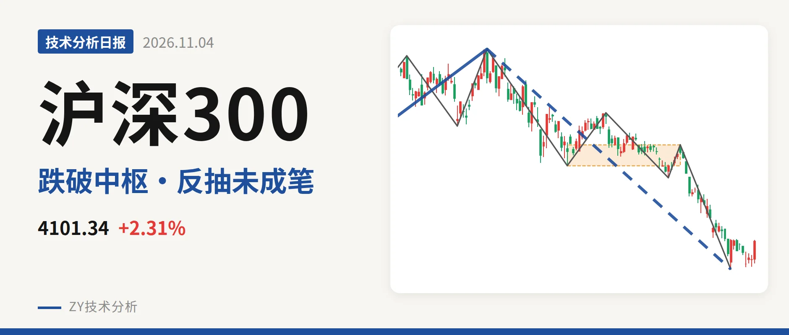
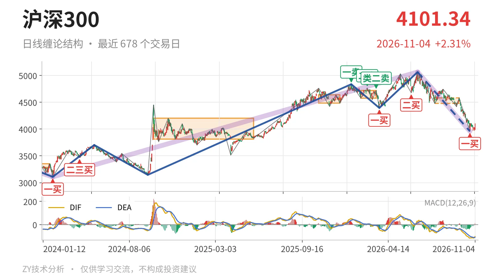
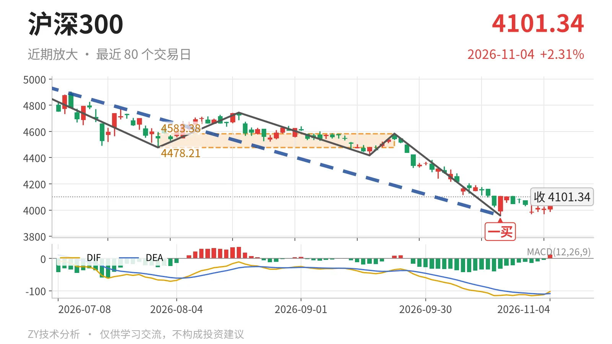

沪深300｜一买后反抽，4478点未回

最近日线中枢 4478.21—4583.38点，收盘位于中枢之下
一句话：今日仍属一买后弱反抽，未回4478点前结构不转强。
📉 走势结构：大级别上涨未完，日线下跌延续
沪深300仍处在2024年2月2日至2026年6月23日上涨段之后的回调里。该上涨段从3108.35点到5064.27点、涨约63%，还没有结束；但6月23日以来的下跌段跌约22%，也还在延续。日线上，6月23日至10月23日的下跌段内含5笔，最近一笔9月22日至10月23日从4583.38点跌到3958.14点、跌13.6%，已经结束，并在10月23日留下日线一买。10月26日至11月4日只是8根K线的反弹，最高4110.00点、最低3968.86点，还没有形成新的一笔。因此当前上涨只能看作一买后的反抽，不是转折。

📍 中枢与位置：跌破最近中枢，大中枢仍有承接
最新收盘4101.34点，在最近日线笔中枢（7月30日至9月22日，4478.21—4583.38点，尚未完成）之下，低于下沿约377点，已经跌破该中枢。近一年日线笔中枢从2月3日至3月17日的4578.21—4720.86点，到7月30日至9月22日的4478.21—4583.38点，中枢是下移的。不过价格仍处于2024年10月8日至2025年5月30日中枢3812.32—4200.91点内部，中轴4006.61点未失。下方关键观察位先看3958点附近，那是10月23日一买位置。
🧭 买卖点：10月23日一买未破坏，但反弹尚未进中枢
10月23日一买3958.14点是最近一个日线笔级别买点。所在下跌笔9月22日至10月23日已经结束，之后走势最低为3968.86点，没有新低，所以这一买还没有被后续行情破坏。但反弹最高只到4110.00点，离最近中枢下沿4478点还有约368点，连中枢下沿都没有反抽到。1月13日一卖4836.95点、2月25日二卖4766.56点、3月17日类二卖4720.86点，卖点一个比一个低，压制了上半年的反弹结构。当前需要看10月23日一买能否带动价格回到中枢。

⚡ 背驰：最后一笔下杀未出现标准新低不新弱
最后一笔下杀没有形成标准的新低不新弱。比较9月22日至10月23日下跌笔与6月23日至7月30日下跌笔：前者跌幅13.6%、绿柱面积494、DIF低点-115.1；后者跌幅11.6%、绿柱面积650、DIF低点-66.5。价格创了新低，DIF低点也大幅新低，只有绿柱面积从650缩到494，这说明价格与DIF同步走低，下跌动能没有完全释放。最新DIF -102.4仍处零轴下方，柱值12.7刚翻红，但未改变零轴下弱势。因此10月23日一买虽在结构低点，但背驰力度不算标准。
🎯 关键位置观察：4478点反抽进不进中枢是分水岭
当前结构弱在两点：跌破最近中枢下沿，反抽未成笔也未能回到中枢。反抽若回不到4478点上方，结构上构成三卖，6月23日以来的下跌段就还有延续的可能；若重新站上4478点，下跌更可能只是中枢扩展。上方看4201点一线，那是2024年10月大中枢上沿；下方看3958点附近，若后续跌破，10月23日一买对应的就只是更小级别低点。整体判断为偏弱结构，但不是单边加速型，弱在未回中枢下沿、未出现标准底背驰。
⚠️ 本文为基于公开行情数据的缠论技术结构记录，由程序自动计算并生成，仅供学习交流，不构成任何投资建议。市场有风险，投资需谨慎。